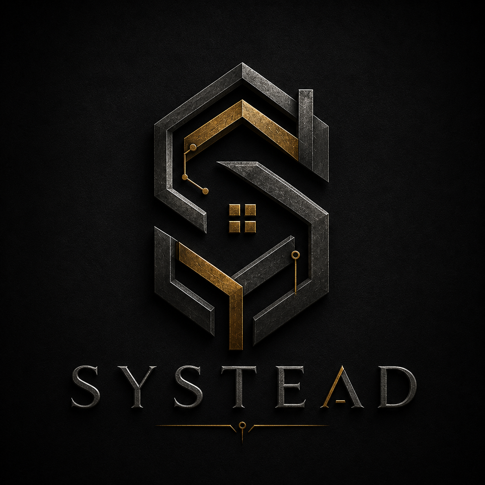
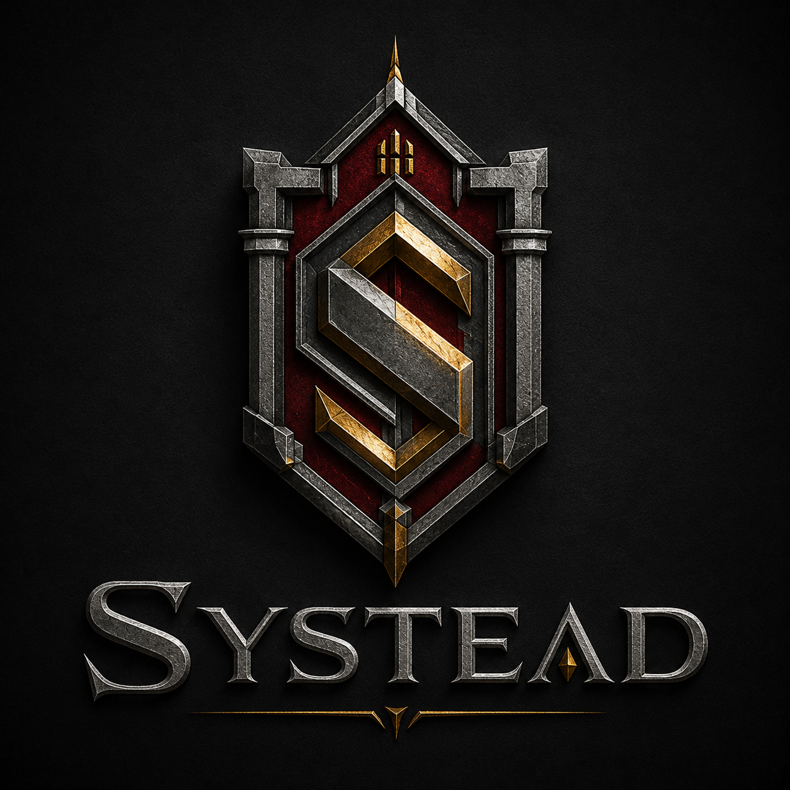

Working marks.
Neither candidate is locked. Review small-size legibility, originality, monochrome use, favicon use, and legal clearance before selection.

Candidate A

Neither candidate is locked. Review small-size legibility, originality, monochrome use, favicon use, and legal clearance before selection.

